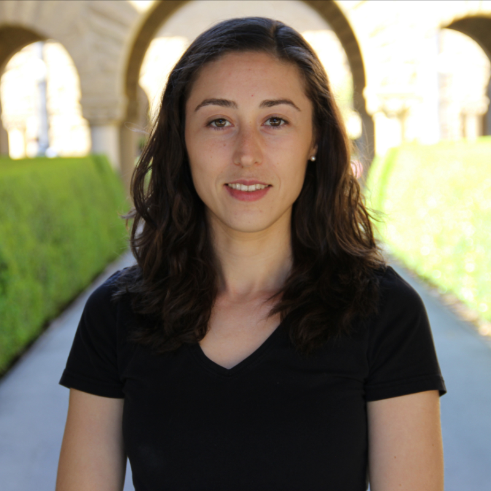

|

| Camelia Simoiu, ASA
PhD Candidate
Computational Social Science
Stanford University
email: csimoiu [at] stanford [dot] edu
Curriculum Vitae |
About
My research focuses on designing and evaluating algorithmic tools to aid human decision-making
in the areas of cyber security and criminal justice. I draw on methods from machine learning, statistics,
and online experiments. I am part of the Stanford Computational Policy Lab,
advised by Professor Sharad Goel.
Our work has been featured in the The Economist,
The Daily Show,
NBC News, and
Vox.
Previously, I was a Fellow of the University of Chicago's Data Science for Social Good program, and a visiting
researcher at the MIT Media Lab in the Human Dynamics group. I received a B.S. in applied statistics from the
University of Toronto and a M.S. in artificial intelligence from the University of Amsterdam. In my spare time, you'll
find me exploring California's back roads on a road bike, waking up at 3am to climb mountains in the snow, diving,
and attempting to produce tolerable sounds on the cello.
Publications
"Who is targeted by email-based phishing and malware? Measuring factors that differentiate risk
Camelia Simoiu, Ali Zand, Kurt Thomas, Elie Bursztein.
ACM Internet Measurement Conference 2020 (IMC), 2020
"I was told to buy a software or lose my computer. I ignored it": A study of ransomware
Camelia Simoiu, Christopher Gates, Joseph Bonneau, Sharad Goel.
Fifteenth Symposium on Usable Privacy and Security (SOUPS), 2019
slides
A large-scale analysis of racial disparities in police stops across the United States
Emma Pierson, Camelia Simoiu, Jan Overgoor, Sam Corbett-Davies, Vignesh Ramachandran, Cheryl Phillips, Sharad Goel
Nature Human Behavior, Vol. 4, 2020
Stanford Open Policing project |
data |
code |
The Problem of Infra-marginality in Outcome Tests for Discrimination
Camelia Simoiu, Sam Corbett-Davies, Sharad Goel
Annals of Applied Statistics, 2017
data |
code |
slides |
TedX
Studying the "Wisdom of Crowds" at Scale
Camelia Simoiu, Chiraag Sumanth, Alok Mysore, Sharad Goel
Seventh AAAI Conference on Human Computation and Crowdsourcing (HCOMP), 2019
[Best Paper Award]
data |
slides
Crowd Research: Open and Scalable University Laboratories.
with Rajan Vaish, Michael Bernstein, Geza Kovacs, et. al.
UIST 2017
Investigating the Wisdom of the Crowds at Scale
Alok Shankar Mysore, Camelia Simoiu, Sharad Goel, et al.
UIST 2015
Reports
Developing data science tools for improving enterprise cyber-security (Data Study Group Final Report)
Alan Turing Institute, 2018
Quantifying Systemic Cyber Risk, Report on the "Connectedness in Cyber Risk" Workshop
Global CRQ Network, 2018
Selected talks
09/2020 Core Data Science, Facebook, Menlo Park, CA.
09/2020 Guest speaker, Using Artificial Intelligence for Good (EECS98), Berkeley, CA.
03/2020 Women in Data Science (WiDS) panel, Stanford, CA.
03/2020 Norton LifeLock, Mountain View, CA.
10/2019 Cybersecurity & Privacy Festival (Defending the Human), Stanford, CA.
10/2019 Seventh AAAI Conference on Human Computation and Crowdsourcing (HCOMP), Stevenson, WA.
08/2019 Fifteenth Symposium on Usable Privacy and Security (SOUPS), Santa Clara, CA.
05/2019 WWW CyberSafety Workshop, San Francisco, CA.
05/2019 Google (Apps UX Research), Sunnyvale, CA
12/2018 Eleventh International Conference on Computational and Methodological Statistics (CMStatistics), Pisa, Italy.
12/2018 Stanford Computer Science Security Lunch, Stanford, CA.
05/2018 Electronic Frontier Foundation, San Francisco, CA.
04/2018 Santa Clara University, AI for social impact speaker series, Santa Clara, CA.
12/2017 StanCon2018, Pacific Grove, CA.
10/2017 Conference On Digital Experimentation (CODE), Boston, MA.
05/2017 World Economic Forum, Cyber Risk Quantification Workshop, San Diego, CA.
11/2016 TEDxBeaconStreet, Cambridge, MA.
08/2016 Joint Statistical Meetings (JSM), Chicago, IL.
07/2016 2nd Annual International Conference on Computational Social Science (CSS), Evanston, IL.
Service
I have served on the program committee for the following conferences:
- Reviewer, Debugging Machine Learning Models, ICLR 2019 workshop.
- Reviewer AI for Social Good, ICML 2019 Workshop.
- Reviewer, RSAC Security Scholar Program, 2017-2018, San Francisco, CA.
- Local chair, ACM Conference on Online Social Networks (COSN), Stanford, CA.
Co-organized the "Behavioral security seminar", Stanford, CA, 2018
Press coverage
10/17 Stanford News. A Stanford-led platform for crowdsourced research gives experience to global participants
08/17 The Daily Show. A Stanford University study uncovers racial disparity in routine traffic stops
06/17 The Economist. Measuring racial bias in police forces
06/17 NBC News. Police searches drop dramatically in states that legalized marijuana
06/17 The Daily Mail. Police officers are more likely to cite black or Latino drivers than whites during traffic stops
08/16 Vox. Study: police officers have lower standards for searching black people than white people
08/16 Vox. Commentary in VOX
06/16 Stanford News. Stanford researchers develop new statistical test that shows racial profiling in police traffic stops
02/16 The Observer. Stanford Traffic Stops Database Will Let Public Analyze Racial Profiling
02/16 Phys.org Engineers battle bias in the criminal justice system
02/16 Stanford News. Stanford engineers' 'Law, Order & Algorithms' data project aims to identify bias in the criminal justice system
|
{kind=link}